Instalacja przez Terminal
Logowanie do OpenWebif, wklejanie komendy, uruchomienie skryptu i alternatywa przez PuTTy.
Osobny dział na szybkie instrukcje krok po kroku. Tutaj trafiają praktyczne poradniki z obrazkami, które pokazują konkretną ścieżkę działania bez zbędnego szukania po stronie.

Każdy poradnik prowadzi krok po kroku i ma pełne zdjęcia w samej instrukcji.
Logowanie do OpenWebif, wklejanie komendy, uruchomienie skryptu i alternatywa przez PuTTy.
Edycja pliku oscam.server, zapis przez Save i poprawny restart usługi.
Przygotowanie pliku playlists.txt i wgranie go do katalogu /etc/enigma2/xstremity.
To osobna zakładka na praktyczne instrukcje. W kolejnych aktualizacjach możesz tu dopisywać następne poradniki w tym samym układzie.
Każdy z poniższych poradników możesz otworzyć jako dokument PDF, zachować offline albo wydrukować. To wygodna wersja do pracy przy tunerze lub na telefonie.
PDF z logowaniem do Terminala, użyciem funkcji Paste from browser i uruchomieniem polecenia.
PDF z wejściem do Interfejsu sieciowego OSCam, zapisem zmian i restartem usługi.
PDF z przygotowaniem playlists.txt, połączeniem przez FileZilla/DCC i podmianą pliku.
To najszybszy sposób instalacji wtyczek, oscamów, ncamów i innych skryptów publikowanych na stronie. Wystarczy wejść do OpenWebif, zalogować się i wkleić gotowe polecenie.
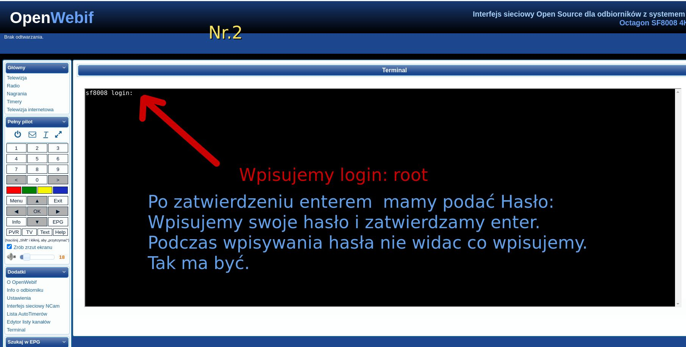
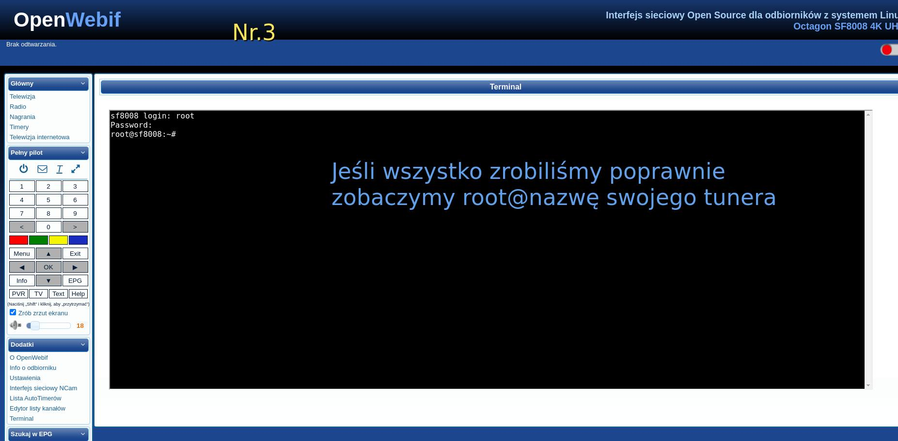
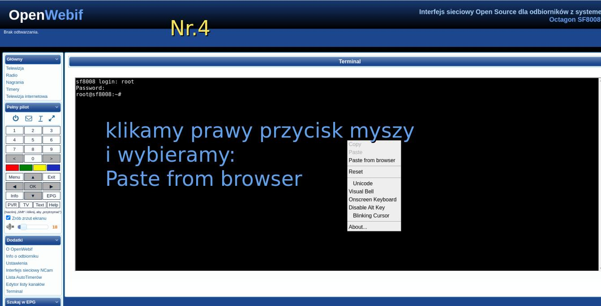
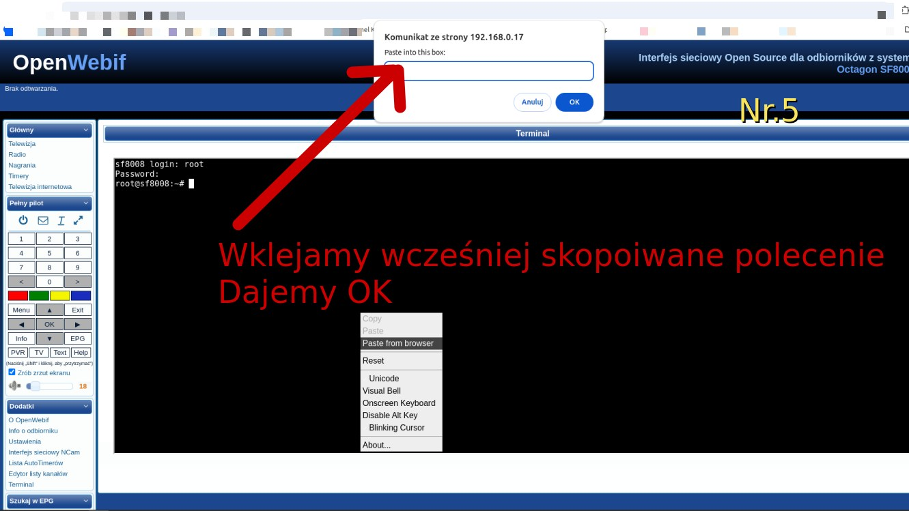
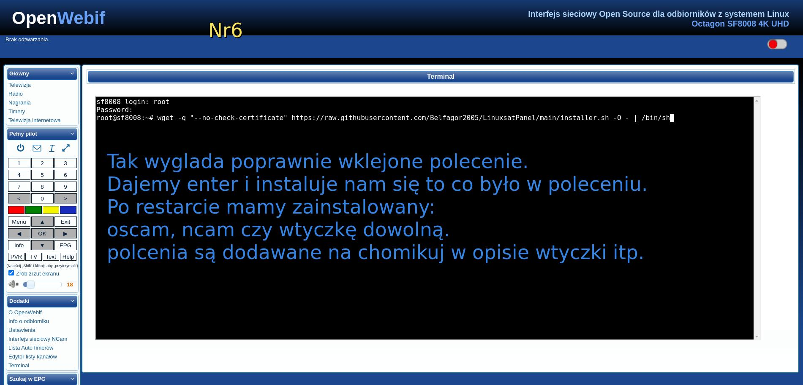
Dodawanie linii do OSCam możesz wykonać bezpośrednio z przeglądarki przez OpenWebif. Poniżej masz pełną, prostą ścieżkę od wejścia na tuner do restartu OSCam.
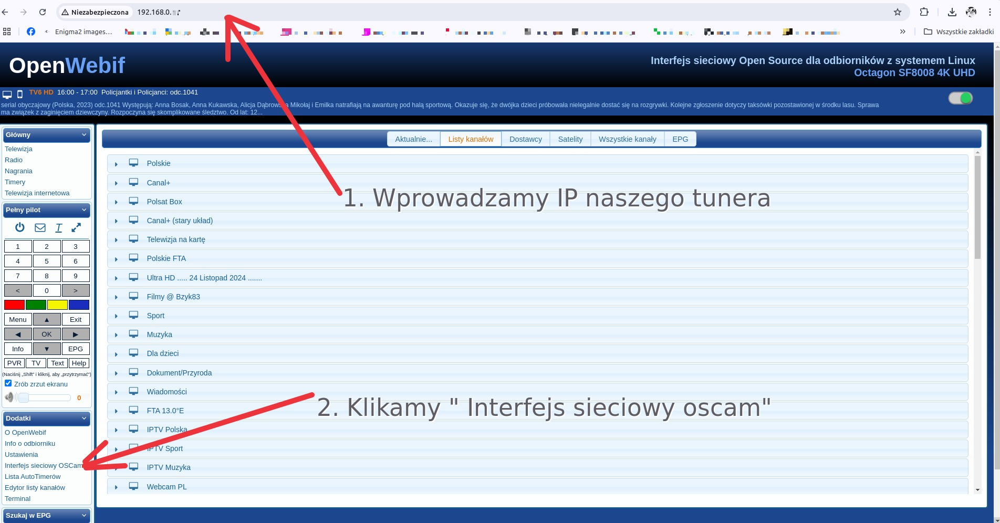
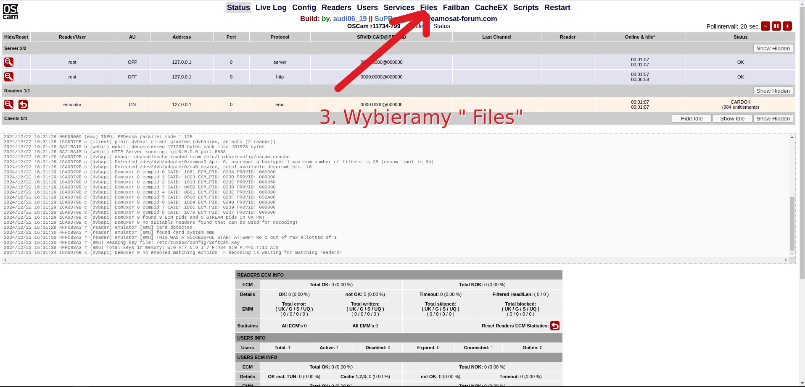
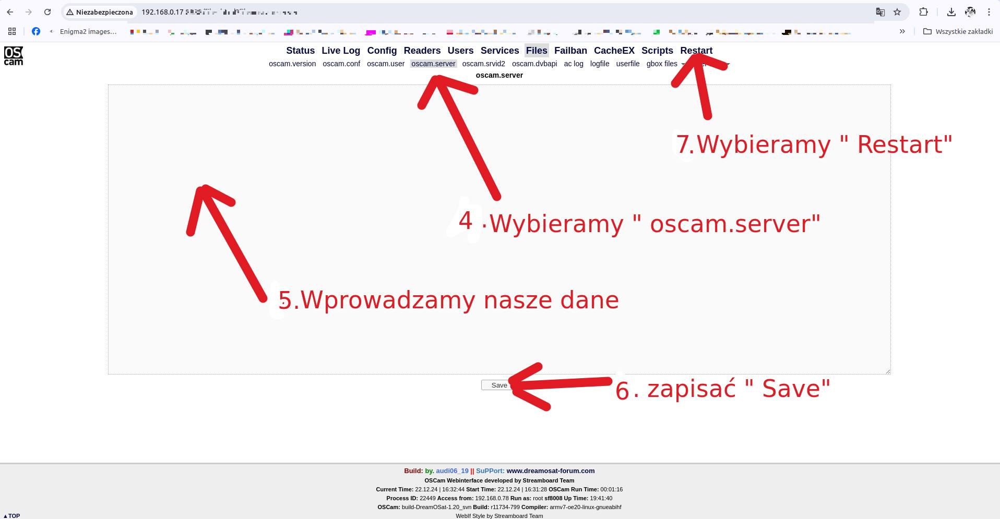
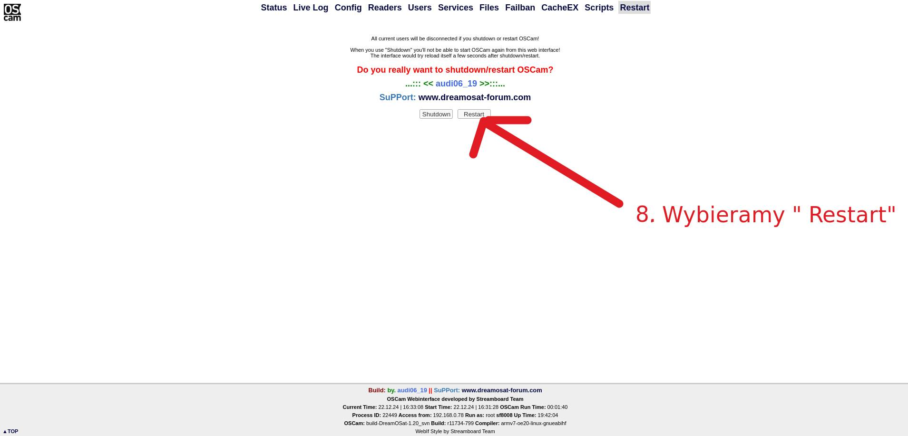
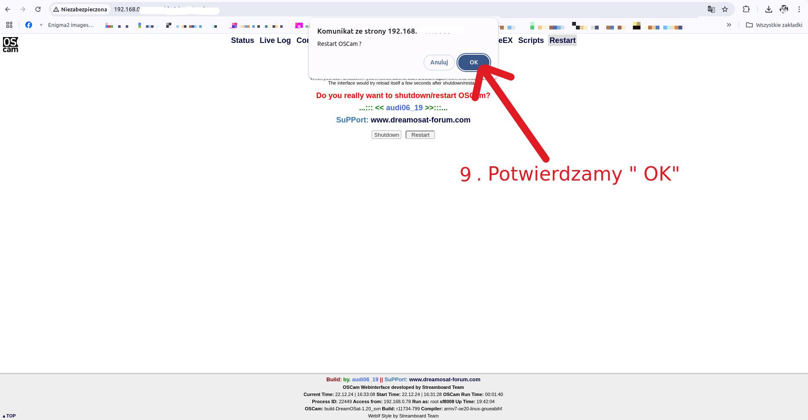
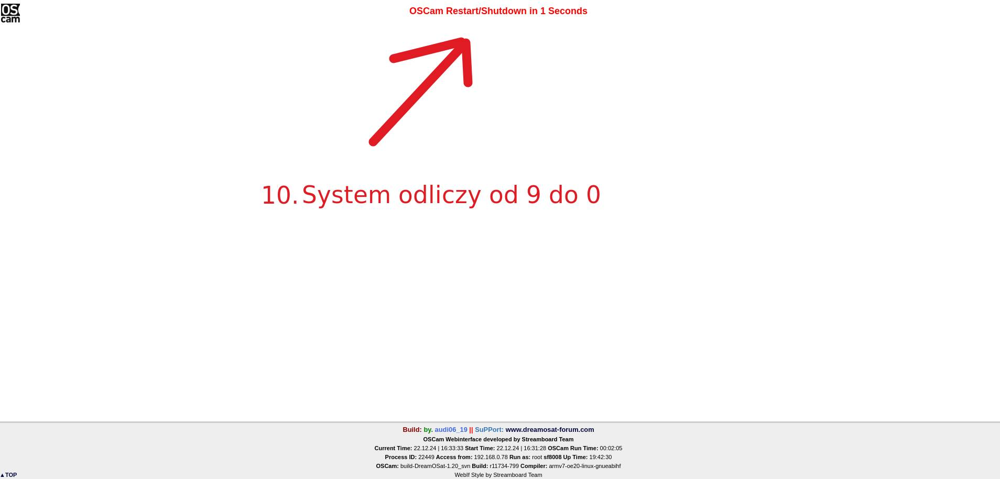
Jeśli nie chcesz ręcznie przepisywać danych z pilota, przygotuj plik playlists.txt na komputerze i wgraj go bezpośrednio do katalogu Xstremity w tunerze. To szybkie i wygodne rozwiązanie.
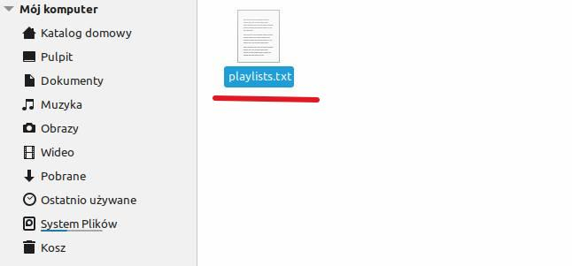
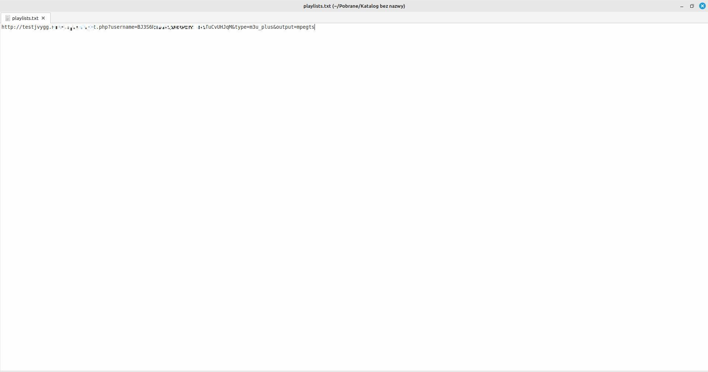
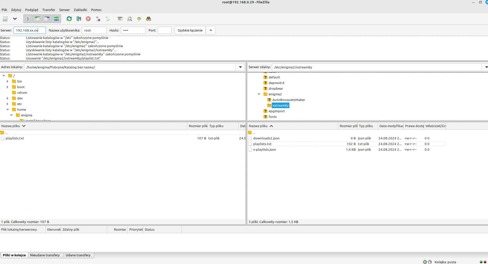
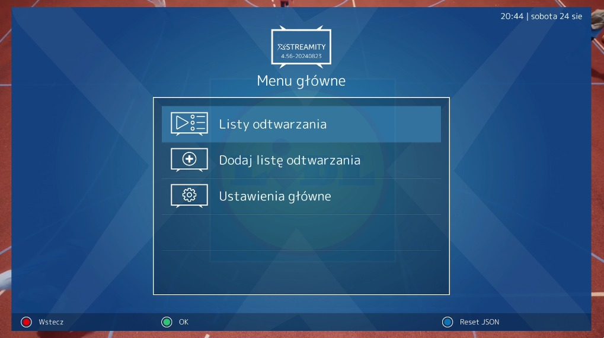
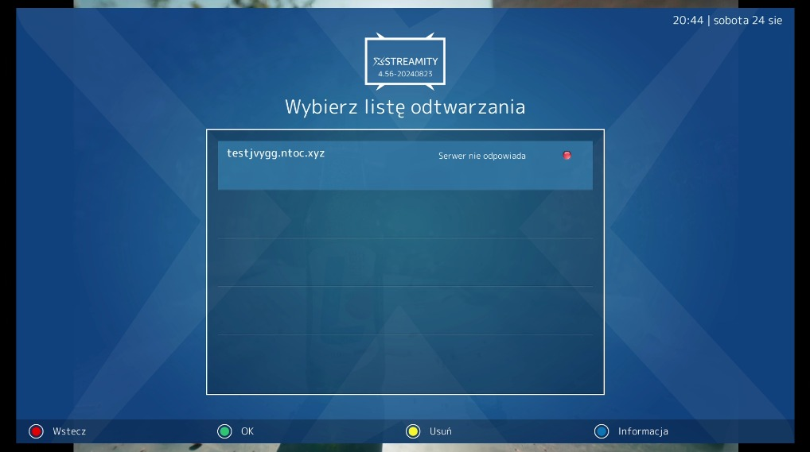